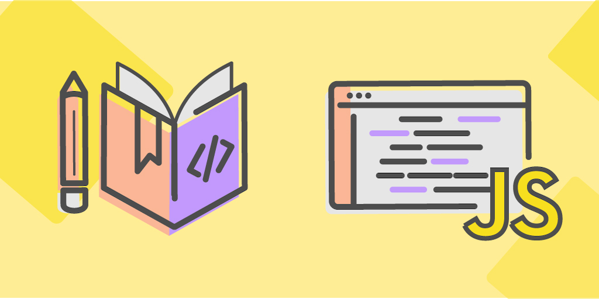

О разработке
Процедуру создания сайта можно разделить на 6 универсальных этапов:
1.Подготовка
2.Проектирование
3.Разработка дизайна
4.Верстка
5.Программная настройка
6.Наполнение контентом и тестирование
Разберем из этих этапов: подготовку, проектирование, разработку дизайна и верстку.

1. Подготовка
На подготовительном этапе уделяется внимание 2 основным вещам:1.Цели и задачи, конкретизация идей проекта
2.Регистрация доменного имени и хостинга
Читайте о том, как правильно формулировать цели и задачи и на что обратить внимание при регистрации домена, в статье «Что нужно для создания сайта?»
2. Проектирование
На этом этапе разрабатывается техническое задание (коротко ТЗ).Никогда не делайте интернет-проект без технического задания
ТЗ - хороший ориентир при взаимодействии между заказчиком и исполнителемОтличное ТЗ служит хорошим ориентиром при взаимодействии между заказчиком и исполнителем (даже если заказываешь сам у себя) и экономит дорогое время дизайнеров и программистов в несколько раз.

3. Разработка дизайна
На этом этапе разрабатывается макет главной и внутренних страниц. У любого сайта должен быть хороший внешний вид, иначе он никому не будет нравиться. Как сделать дизайн сайта? Тут есть 2 пути:1.Заказать разработку уникального дизайна. Плюсы: сразу под логотип, фирменный стиль и бизнес-логику. Минусы: стоит дорого, делается долго.
2.Взять бесплатный (или купить платный) шаблон. Плюсы: стоит недорого, экономится время на верстке. Минусы: придется доделывать под конкретные задачи сайта, что в итоге тоже может быть долго по времени.
Тут вопрос не во вкусе, а скорее в финансовой возможности и целесообразности затрат. Уникальный дизайн делается дольше и стоит дороже шаблона, однако он будет заточен сразу под ваш фирменный стиль и бизнес-логику, а любой даже самый хороший шаблон придется «допиливать».
4. Верстка
Если вы ни разу не участвовали в процессе разработки сайта, то вряд ли знаете, что такое верстка. Это нарезка элементов дизайн-макета в таком виде, чтобы их можно было использовать на сайте. Это переход от макета в программе Photoshop к набору файлов HTML и CSS.Верстка должна быть кросс-браузерной и адаптивной.
Кросс-браузерный сайт должен нормально отображаться во всех современных браузерах: Internet Explorer, Google Chrome, Mozilla Firefox, Opera, Safari, Яндекс Браузер. В 90-х годах Internet Explorer был самым популярным браузером. Он охватывал 70% аудитории рунета, и сайт можно было делать только под него. В 2000-х картина изменилась, стали развиваться Mozilla Firefox, Opera, Safari, а крупные поисковые системы Яндекс и Google выпустили свои браузеры.
Адаптивный сайт должен нормально отображаться на всех мобильных платформах, смартфонах и планшетах. Это тренд, начавшийся в 2011 году. Тогда это было редкость, сейчас мобильная версия - необходимый атрибут любого сайта. Объем мобильного трафика уже давно превысил объем трафика настольных компьютеров 
Основные архитектурные черты: динамическая типизация, слабая типизация, автоматическое управление памятью, прототипное программирование, функции как объекты первого класса.